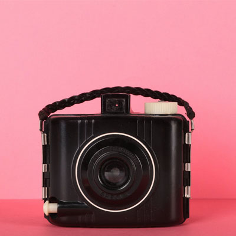
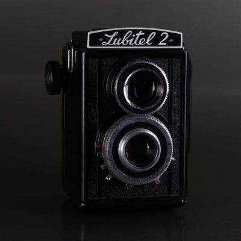
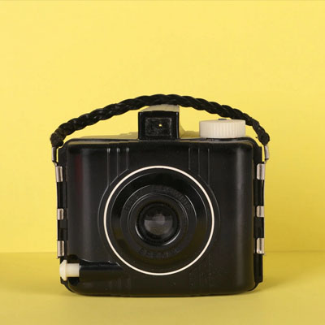

Drawing with light

Photography is the art, application, and the practice of creating durable images by recording light, either electronically by means of an image sensor, or chemically by means of a light-sensitive material such as photographic film. It is employed in many fields of science, manufacturing (e.g., photolithography), and business, as well as its more direct uses for art, film and video production, recreational purposes, hobby, and mass communication.
Typically, a lens is used to focus the light reflected or emitted from objects into a real image on the light-sensitive surface inside a camera during a timed exposure. With an electronic image sensor, this produces an electrical charge at each pixel, which is electronically processed and stored in a digital image file for subsequent display or processing. The result with photographic emulsion is an invisible latent image, which is later chemically "developed" into a visible image, either negative or positive depending on the purpose of the photographic material and the method of processing. A negative image on film is traditionally used to photographically create a positive image on a paper base, known as a print, either by using an enlarger or by contact printing.
Etymology
The word "photography" was created from the Greek roots φωτός (phōto's), genitive of φῶς (phōs), "light" and γραφή (graphé) "representation by means of lines" or "drawing", together meaning "drawing with light".
Monochrome

Originally, all photography was monochrome, or black-and-white. Even after color film was readily available, black-and-white photography continued to dominate for decades, due to its lower cost, chemical stability, and its "classic" photographic look. The tones and contrast between light and dark areas define black-and-white photography. It is important to note that monochromatic pictures are not necessarily composed of pure blacks, whites, and intermediate shades of gray but can involve shades of one particular hue depending on the process. The cyanotype process, for example, produces an image composed of blue tones. The albumen print process first used more than 170 years ago, produces brownish tones.
Many photographers continue to produce some monochrome images, sometimes because of the established archival permanence of well-processed silver-halide-based materials. Some full-color digital images are processed using a variety of techniques to create black-and-white results, and some manufacturers produce digital cameras that exclusively shoot monochrome. Monochrome printing or electronic display can be used to salvage certain photographs taken in color which are unsatisfactory in their original form; sometimes when presented as black-and-white or single-color-toned images they are found to be more effective. Although color photography has long predominated, monochrome images are still produced, mostly for artistic reasons. Almost all digital cameras have an option to shoot in monochrome, and almost all image editing software can combine or selectively discard RGB color channels to produce a monochrome image from one shot in color.
Color

Color photography was explored beginning in the 1840s. Early experiments in color required extremely long exposures (hours or days for camera images) and could not "fix" the photograph to prevent the color from quickly fading when exposed to white light.
The first permanent color photograph was taken in 1861 using the three-color-separation principle first published by Scottish physicist James Clerk Maxwell in 1855. The foundation of virtually all practical color processes, Maxwell's idea was to take three separate black-and-white photographs through red, green and blue filters. This provides the photographer with the three basic channels required to recreate a color image.